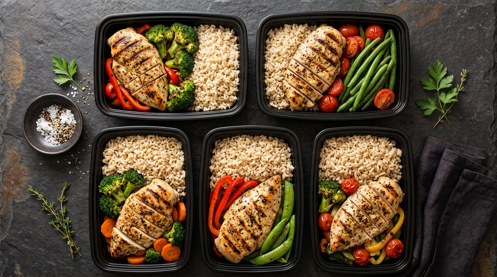
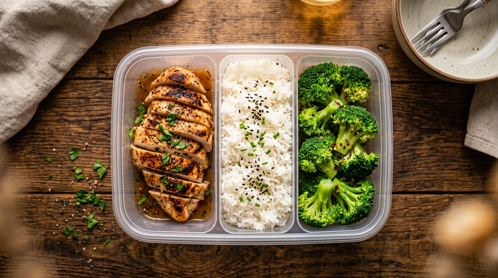
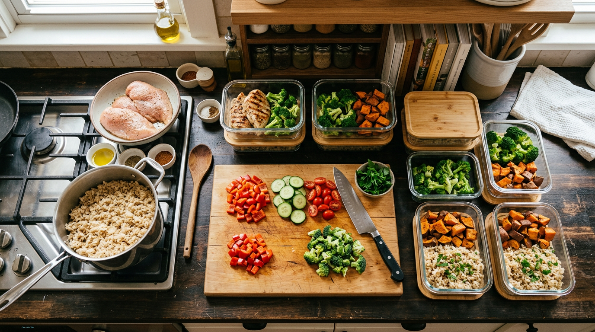
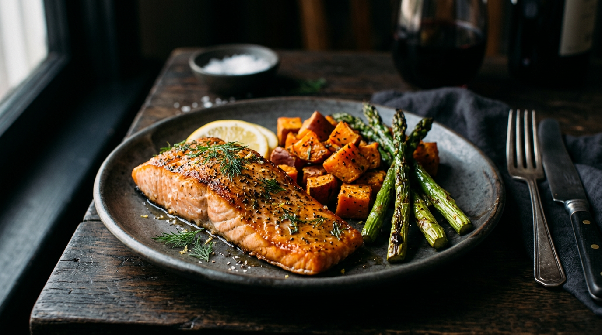

🍃
NUTRILISH
7-Day
High Protein
Meal Prep Blueprint
Simplify your week. Hit your macros. No guesswork.

Free Guide • 2026 Edition
Most people fail their diet on Wednesday — not because they lack willpower, but because they're hungry, it's 7pm, and the easiest option is a drive-through. Meal prep closes that gap.
Spending a few hours on Sunday means every meal this week is already decided, portioned, and ready to heat. No decision fatigue. No emergency takeout. Just consistency, compounding over time into real results.
Pro Tip
Start with just 2 meals per day. Perfect those, then expand. Trying to prep all 5 meals on day one is how you burn out in week two.
🛒 What You'll Need
- Glass meal prep containers (10–12 pack, 2–4 cup sizes)
- Kitchen scale — non-negotiable for accurate macros
- Large cutting board + sharp chef's knife
- Sheet pans (2–3) for roasting proteins + vegetables at once
- Slow cooker or Instant Pot for hands-off batch cooking
- Freezer bags for smoothie packs and batch-frozen portions
2
NUTRILISH
These targets are calibrated for an active adult (150–180 lb) in a slight deficit with muscle retention as the priority. Adjust up or down by 100–200 calories based on your weight and activity level.
Protein First. Always.
Protein is the only macro that directly builds and preserves muscle. At 180g/day, you're eating roughly 1g per pound of goal bodyweight — the research-backed sweet spot. Fill your plate with protein first, then add carbs and fat to reach your calorie target.
🥩
Protein
Muscle repair, satiety, thermogenic — burns more calories digesting than fat or carbs
🍚
Carbs
Primary fuel for workouts and brain function. Time them around training for best results
🥑
Fat
Hormone production, joint health, fat-soluble vitamin absorption. Never go below 40g/day

Protein Sources Cheat Sheet
|
Source |
Serving |
Protein |
Calories |
| 🍗 |
Chicken Breast |
6 oz cooked |
42g |
187 |
| 🦃 |
Ground Turkey 93% |
6 oz cooked |
33g |
240 |
| 🐟 |
Salmon Fillet |
6 oz cooked |
34g |
311 |
| 🥛 |
Greek Yogurt 0% |
1 cup (227g) |
20g |
100 |
| 🥚 |
Eggs |
3 large |
18g |
210 |
| 🧀 |
Cottage Cheese |
1 cup (226g) |
28g |
163 |
| 🌿 |
Tofu (firm) |
6 oz |
15g |
126 |
| 🥩 |
Lean Ground Beef 90% |
6 oz cooked |
36g |
290 |
3
NUTRILISH
Day 1 — Monday
Breakfast
🥛 Greek yogurt parfait with berries & granola
380 cal · 35P · 40C · 8F
Lunch
🍗 Chicken + rice + broccoli bowl
520 cal · 45P · 48C · 12F
Snack
🧀 Cottage cheese + almonds
280 cal · 22P · 12C · 16F
Dinner
🐟 Salmon + sweet potato + asparagus
550 cal · 38P · 52C · 18F
Total: 1,730 cal
Protein: 140g
Carbs: 152C
Fat: 54g
Day 2 — Tuesday
Breakfast
🥚 Egg white omelette with spinach + whole grain toast
350 cal · 32P · 28C · 10F
Lunch
🦃 Turkey meatballs + quinoa + roasted veggies
490 cal · 40P · 44C · 14F
Snack
🍌 Protein shake + banana
310 cal · 30P · 38C · 4F
Dinner
🥩 Lean beef stir-fry + brown rice
580 cal · 42P · 50C · 20F
Total: 1,730 cal
Protein: 144g
Carbs: 160C
Fat: 48g
Day 3 — Wednesday
Breakfast
🌾 Overnight oats + protein powder
420 cal · 34P · 52C · 8F
Lunch
🍗 Chicken Caesar salad wrap
460 cal · 38P · 36C · 16F
Snack
🥚 Hard-boiled eggs + hummus + veggies
250 cal · 18P · 16C · 14F
Dinner
🦃 Turkey chili + cornbread
510 cal · 36P · 48C · 16F
Total: 1,640 cal
Protein: 126g
Carbs: 152C
Fat: 54g
Prep Tip
Cook your chicken breast in bulk — all 3 servings at once on a sheet pan. Season differently per day to avoid taste fatigue.
4
NUTRILISH
Day 4 — Thursday
Breakfast
🫐 Protein pancakes + blueberries
390 cal · 30P · 44C · 10F
Lunch
🐟 Tuna poke bowl
480 cal · 42P · 40C · 14F
Snack
🥛 Greek yogurt + granola
300 cal · 24P · 34C · 8F
Dinner
🍗 Baked chicken thighs + roasted potatoes
560 cal · 40P · 46C · 18F
Total: 1,730 cal
Protein: 136g
Carbs: 164C
Fat: 50g
Day 5 — Friday
Breakfast
🥬 Smoothie bowl (protein, spinach, PB)
410 cal · 32P · 42C · 12F
Lunch
🦃 Ground turkey lettuce wraps
440 cal · 36P · 24C · 22F
Snack
🍫 Protein bar
260 cal · 20P · 28C · 8F
Dinner
🦐 Shrimp + zucchini noodles + garlic sauce
420 cal · 38P · 22C · 18F
Total: 1,530 cal
Protein: 126g
Carbs: 116C
Fat: 60g
Day 6 — Saturday
Breakfast
🥚 Egg muffins + avocado toast
430 cal · 28P · 32C · 20F
Lunch
🍗 Chicken burrito bowl (no tortilla)
530 cal · 44P · 46C · 16F
Snack
🫘 Edamame + string cheese
240 cal · 22P · 14C · 10F
Dinner
🐟 Herb-crusted salmon + couscous
540 cal · 36P · 48C · 18F
Total: 1,740 cal
Protein: 130g
Carbs: 140C
Fat: 64g
Day 7 — Sunday
Breakfast
🍞 French toast + turkey bacon
400 cal · 30P · 40C · 12F
Lunch
🥡 Meal prep leftover bowl
500 cal · 40P · 42C · 18F
Snack
🍎 Apple + almond butter
280 cal · 8P · 28C · 18F
Dinner
🍗 Slow cooker pulled chicken + slaw
520 cal · 44P · 32C · 20F
Total: 1,700 cal
Protein: 122g
Carbs: 142C
Fat: 68g
5
NUTRILISH

Everything you need for the full 7 days. Buy in bulk where quantities allow — it's cheaper and means fewer trips mid-week.
🥩 Proteins
Chicken breast (boneless, skinless)
4 lbs
Ground turkey 93%
2 lbs
Salmon fillets
2 lbs
Lean ground beef 90%
1 lb
Shrimp (large, peeled)
1 lb
Chicken thighs (bone-in)
2 lbs
Tuna (sashimi-grade or canned)
1 lb / 4 cans
Turkey bacon
1 pkg
🍚 Grains & Starches
White or jasmine rice
5 lb bag
Brown rice
2 lb bag
Quinoa
1 lb
Couscous
12 oz
Whole grain bread / tortillas
1 loaf / 1 pkg
Rolled oats
42 oz
Cornbread mix
1 box
Protein pancake mix
1 bag
🥦 Vegetables
Broccoli florets
2 lbs
Sweet potatoes
4 medium
Asparagus
1 bunch
Zucchini
3 large
Baby spinach
10 oz bag
Bell peppers (mixed)
4
Romaine lettuce
2 heads
Mixed stir-fry veggies
2 lb bag
🍎 Fruits
Mixed berries (fresh or frozen)
2 lbs
Blueberries
1 pint
Bananas
6
Apples
4
🥚 Dairy & Eggs
Greek yogurt 0% (plain)
32 oz tub
Cottage cheese (low-fat)
24 oz
Eggs
18-count
Egg whites (carton)
32 oz
String cheese
1 pkg
🫙 Pantry Staples
Protein powder (whey/plant)
1 tub
Almond butter (natural)
1 jar
Hummus
10 oz
Low-sodium soy sauce
1 bottle
Olive oil
1 bottle
Granola (low-sugar)
12 oz
Protein bars (backup)
4 bars
Canned diced tomatoes
2 cans
6
NUTRILISH
Block off 3.5 hours. You'll have the entire week dialed in by lunch. Follow this sequence — it's optimized to minimize idle time while everything cooks simultaneously.
Timeline
9:00 AM
Start rice cooker + preheat oven to 400°F
9:15 AM
Season + prep all proteins — chicken, turkey, salmon on separate trays
9:30 AM
🍗 Chicken breast + 🍠 sweet potatoes into oven (roast 35–40 min)
10:00 AM
🦃 Brown ground turkey on stovetop, start turkey chili in slow cooker
10:30 AM
🥦 Chop vegetables, load sheet pan for roasted veggies (swap into oven)
11:00 AM
🐟 Cook salmon on stovetop, bake egg muffins in muffin tin (20 min)
11:30 AM
Prep overnight oats (7 jars), portion smoothie packs into freezer bags
12:00 PM
Portion everything into labeled containers — protein, carbs, veggies separated
12:30 PM
Clean up, stock fridge (days 1–4), freezer (days 5–7), done.

Storage Guide
Fridge (days 1–4): Cooked proteins + grains stay fresh 4–5 days
Freezer (days 5–7): Portion and freeze Sunday, thaw in fridge Thursday night
Overnight oats: All 7 jars can live in the fridge all week
Smoothie packs: Freeze portioned bags, blend fresh each morning
Label everything with the day and meal — future you will appreciate it
Reheating Rules
Chicken / turkey
90 sec microwave
Salmon / shrimp
60 sec, cover loosely
Rice / grains
Sprinkle water, 60 sec
Veggies
45–60 sec
Container Tip
Invest in quality glass containers. They reheat more evenly, don't absorb odors, and outlast plastic by years. Pyrex or OXO sets are worth every dollar.
7
NUTRILISH
🍃
NUTRILISH
Want AI-powered meal plans
personalized to YOUR macros?
NutriLish generates custom meal plans, tracks your nutrition with just a photo, and adapts to your goals — all in one beautifully simple app.
Photo nutrition tracking
Custom meal plans
Macro goals & progress
AI-powered recommendations
Download NutriLish Free →
Available on the App Store • iOS 17+
NUTRILISH
8